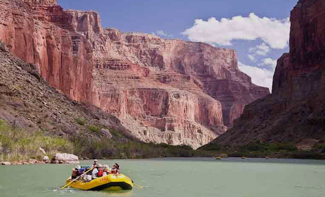
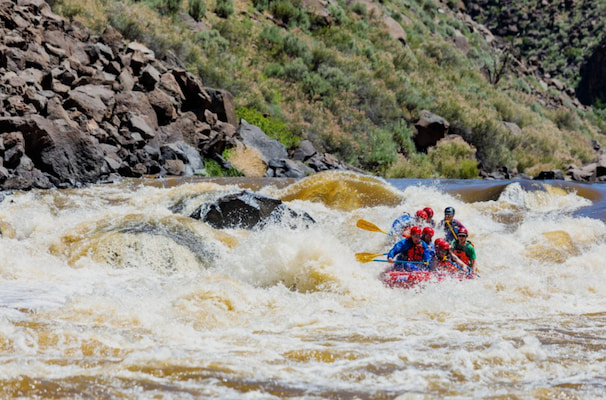
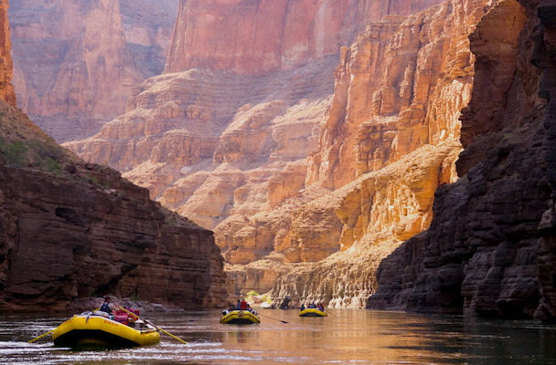

The Mini - 1 Day
Are you short on time but big on fun? The Mini might be the trip for you!
We start the day in Snowflake, Arizona and board a bus for a short ride
to White Mountain Lake, where we will traverse the Snake River.
Be prepared for a gripping experience filled with adrenaline. We end the
day at the Petrified Forest for a celebratory dinner before the short ride
back to Snowflake. It may be a quick trip, but it is definitely one for
the books.

The Ambitious - 3 Day
Want more than The Mini, but not quite ready for The Epic? Then this is
your adventure. Day 1 begins in Eager, Arizona, where we board a bus to
Muddy River and follow it to the confluence of the Muddy and Gila Rivers.
After a thrilling first day, we camp in Tombstone, Arizona. Day 2 begins
with time to explore Tombstone before departing for the Bogus Rapids on
the Gila River. We finish the day in Whiteriver with a feast and live
entertainment. On Day 3, we board the bus for the ride back to Eager,
ending our legendary adventure.

The Epic - 7 Day
The Epic was created for mild adventure seekers who want the complete
rafting experience. Beginning in Page, Arizona, you will enjoy incredible
views including Petroglyphs, Horseshoe Bend, and Lees Ferry before camping
at Redwall Cavern.
Over seven unforgettable days, guests enjoy world-famous canyon scenery,
exciting rapids, train rides, camping, waterfalls, cultural experiences,
and spectacular meals. The trip concludes with transportation back to Page,
Arizona after the adventure of a lifetime.